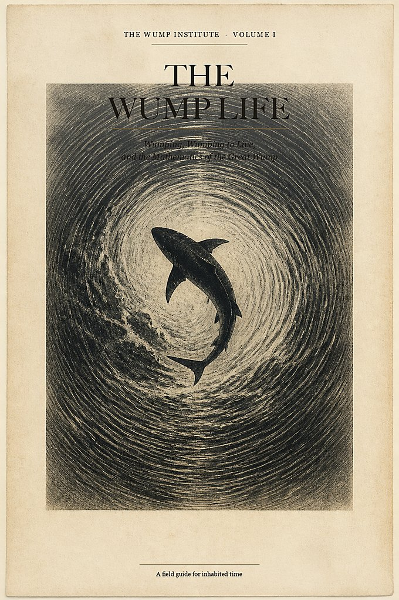
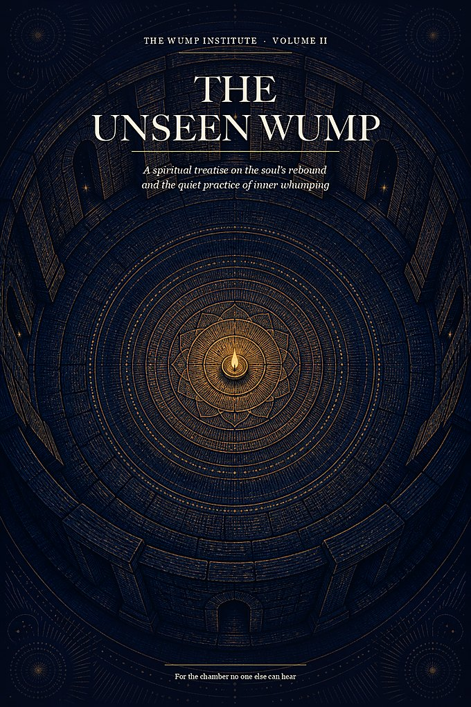
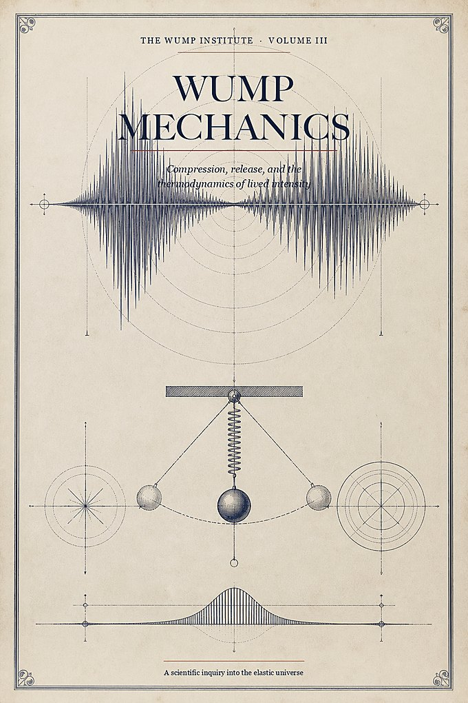
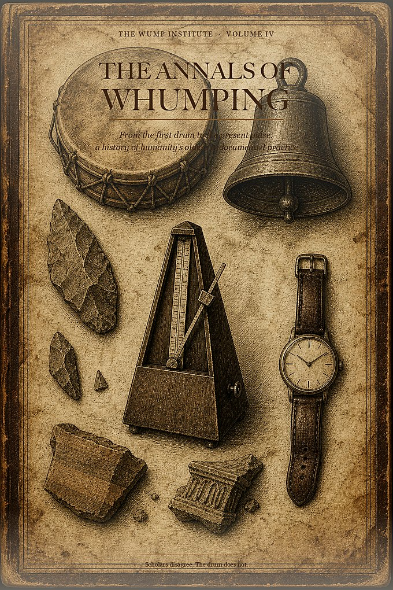

Institute for Applied Whumping · Correspondence, 2026
Wump To Live
A field institute, library, and seminar house for anyone who suspects that existence is measured not in years, but in whumps.
First Principle: A life without whumping is merely time passing.
What is a wump?
A unit of lived intensity.
A wump is not merely an event. It is the moment ordinary existence compresses, rebounds, and announces itself with unmistakable force. One may wump physically, socially, spiritually, rhythmically, or in the quiet privacy of one’s own inner chamber.
The Institute treats whumping with the seriousness reserved for migration, thermodynamics, and maritime law. The proposition is simple: people need periodic experiences of effort, novelty, release, connection, and return. Without them, even a crowded week is a kind of disappearance.
We opened our correspondence in 2026. The practice is older. The drum was never in the museum. It was in the hands.
The Wump To Live Library
Four treatises. One pulse.
Download the complete field library — the original manifesto and three new volumes on the soul, the sciences, and the undocumented history of the practice.
-

Volume I · ManifestoThe Wump Life
Whumping, whumping to live, and the mathematics of the Great Wump. A field guide for inhabited time.
Download the e-book -

Volume II · SpiritualThe Unseen Wump
A treatise on the soul’s rebound and the quiet practice of inner whumping. For the chamber no one else can hear.
Download the e-book -

Volume III · ScientificWump Mechanics
Compression, release, and the thermodynamics of lived intensity. A scientific inquiry into the elastic universe.
Download the e-book -

Volume IV · HistoricalThe Annals of Whumping
From the first drum to the present pulse: a history of humanity’s oldest undocumented practice.
Download the e-book
The Curriculum
From the first wump to the advanced rebound.
Seminars are live, limited, and conducted with the gravity of a maritime licensing exam. Notes are provided. The interval is the work.
-
I
Finding Your First Wump
For the newly elastic. How to locate compression in an ordinary week, complete a small cycle without irony, and recover before you start collecting peaks. The Opening Interval is built on this course.
-
II
Avoiding Conflict Through Properly Timed Wumps
Most arguments are two waveforms refusing to make room for each other’s peaks. Timing, phase, and the ethics of not detonating in the kitchen. Thanksgiving is discussed, with feeling.
-
III
Wumping with Rhythm
Swing is scheduled surprise. Students learn the interval as a pulse rather than a deadline: rest as part of the signal, not an apology after it. Bring comfortable shoes. A table may be used as a drum.
-
IV
The Micro-Wump Method
A walk for no reason. A meal cooked with theatrical seriousness. A 7% increase in spirit applied to something already on the calendar. Maintenance for people who cannot wait for the next festival.
-
V
The Inner Chamber
Spiritual track. Prayer as compression, the false wump of performance, and the dark night of unwumpedness. Conducted with candles, silence, and a prohibition on announcing a new personality before breakfast.
-
VI
Advanced Wumping: Magnitude Without Volume
For those who already wump and would like to stop confusing spectacle with size. Completion coefficients, recovery as engineering, and how not to become a repeating collision. Prerequisite: a pulse you can feel without a crowd.
Letters from the field
What happens after the interval.
I signed up because the name made my husband laugh and I wanted something to hold over him. I left able to tell the difference between a fight and two people peaking at the same time. We still argue. We argue later, which turns out to be the whole trick. I would not call it magic. I would call it manners with a better theory.
I direct a high school band. Rhythm I had. Permission to treat rest as part of the music, I did not. The seminar is drier than the title. That is a compliment.
I am sixty-seven and I thought I had missed the window for a first anything. They had me walk around the block as if it counted. It did. I cried, which I did not put in the evaluation form, and then I ate a very serious sandwich. I have since whumped twice more, once while fixing a lamp.
I read Wump Mechanics on a flight and annoyed my seatmate by underlining. I started putting the recovery on the calendar before the event. My data got quieter. That was the point.
ER nights used to erase the rest of me. The micro-wump stuff sounds cute until you use it between rooms: one complete breath, one joke that is actually finished, then back. I was skeptical of the institute voice. I still am, a little. I also keep the book in my locker.
I went to The Inner Chamber expecting incense and left with a rule I use: if I want to post it, it is not done. My friends say I am slightly less exhausting. I will take that as a spiritual outcome.
The next public seminar
The Opening Interval
Saturday, 12 September 2026 · 10:00 a.m. to 2:30 p.m. Eastern
Finding Your First Wump, taught live by correspondence. Forty seats. Notes from Volumes I and II included. Tuition is $64, because a first wump should not require a loan. If $64 is the thing standing between you and the room, say so on the form. We would rather have your pulse than your performance of solvency.
- Format
- Live video, small room, cameras optional after the first hour
- Seats
- 18 of 40 remaining
- Bring
- A walkable pair of shoes and one unfinished Tuesday
You are on the interval.
A letter will follow.
Check the address you gave us. If you selected the Opening Interval, your walking instructions arrive within two days. If you selected a later seminar, you are on that list and will hear from us when the room is dated.
Until then: identify one thing this week that is merely happening, and one thing that could be deliberately whumped. Increase the second by exactly 7% in spirit.